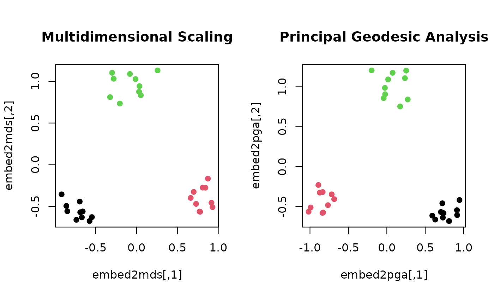

Given \(N\) observations \(X_1, X_2, \ldots, X_N \in \mathcal{M}\), Principal Geodesic Analysis (PGA) finds a low-dimensional embedding by decomposing 2nd-order information in tangent space at an intrinsic mean of the data.
riem.pga(riemobj, ndim = 2)a S3 "riemdata" class for \(N\) manifold-valued data.
an integer-valued target dimension.
a named list containing
an intrinsic mean in a matrix representation form.
an \((N\times ndim)\) matrix whose rows are embedded observations.
Fletcher PT, Lu C, Pizer SM, Joshi S (2004). “Principal Geodesic Analysis for the Study of Nonlinear Statistics of Shape.” IEEE Transactions on Medical Imaging, 23(8), 995--1005. ISSN 0278-0062.
#-------------------------------------------------------------------
# Example on Sphere : a dataset with three types
#
# 10 perturbed data points near (1,0,0) on S^2 in R^3
# 10 perturbed data points near (0,1,0) on S^2 in R^3
# 10 perturbed data points near (0,0,1) on S^2 in R^3
#-------------------------------------------------------------------
## GENERATE DATA
mydata = list()
for (i in 1:10){
tgt = c(1, stats::rnorm(2, sd=0.1))
mydata[[i]] = tgt/sqrt(sum(tgt^2))
}
for (i in 11:20){
tgt = c(rnorm(1,sd=0.1),1,rnorm(1,sd=0.1))
mydata[[i]] = tgt/sqrt(sum(tgt^2))
}
for (i in 21:30){
tgt = c(stats::rnorm(2, sd=0.1), 1)
mydata[[i]] = tgt/sqrt(sum(tgt^2))
}
myriem = wrap.sphere(mydata)
mylabs = rep(c(1,2,3), each=10)
## EMBEDDING WITH MDS AND PGA
embed2mds = riem.mds(myriem, ndim=2, geometry="intrinsic")$embed
embed2pga = riem.pga(myriem, ndim=2)$embed
## VISUALIZE
opar = par(no.readonly=TRUE)
par(mfrow=c(1,2), pty="s")
plot(embed2mds, main="Multidimensional Scaling", col=mylabs, pch=19)
plot(embed2pga, main="Principal Geodesic Analysis", col=mylabs, pch=19)

par(opar)